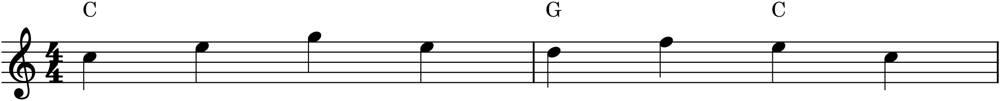
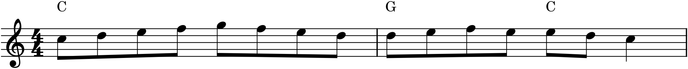
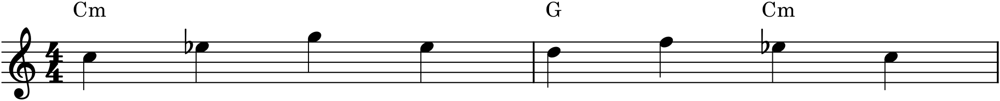

Of all the forms, theme and variations rests most directly on the principle that has run through this whole book: unity and variety, the familiar and the new. The idea is simplicity itself — state a theme, then present it again and again, each time transformed — and yet it produces some of the most delightful music ever written, from Mozart’s variations on “Twinkle, Twinkle, Little Star” (which he knew as a French tune) to the monumental sets of Bach and Beethoven. It is also, not coincidentally, the single best form for a beginner to compose, because it hands you the hardest part — the material — and asks only that you learn to transform it, which is the core creative act of composition in its purest, most teachable shape.
24.1The theme
A variation set begins with a theme: a short, complete, and above all simple melody, usually a self-contained binary or ternary tune of eight to sixteen bars (Chapter 23), harmonized plainly. Simplicity is not a limitation here but a requirement — the theme must be clear and memorable enough to remain recognizable through every disguise, and plain enough to leave room for elaboration. A theme that is already ornate has nowhere to go. Here is a deliberately plain one, two bars of it:

The theme in Figure 24.1 is nobody’s masterpiece, and that is exactly right. Everything interesting will happen to it.
24.2What stays, and what changes
A variation is a paradox: it must be different enough to be a variation, yet the same enough to be recognizable as the theme. The art lies in what you hold constant. Almost always, the harmonic structure and the phrase structure are the identity thread — the chord progression and the layout of cadences stay the same underneath, while the surface changes above. This is why a variation can sound utterly transformed and still be unmistakably the theme: the bones are identical even when all the flesh is new. Sometimes instead it is the melody that is held constant while the accompaniment and texture change around it. Either way, something persists as the anchor, and something else is free to be reinvented.
24.3Ways to vary
The techniques of variation are a catalogue of nearly everything in this book, applied to one theme. The most common:
- Melodic figuration — keeping the theme’s notes on the beats but filling the spaces between them with faster passing tones, neighbor tones, and ornaments, so the melody runs where it once walked.
- Rhythmic variation — recasting the theme in a new rhythm: dotted, syncopated, or in the augmentation and diminution of Chapter 19.
- Textural variation — changing the accompaniment pattern (Chapter 21): block chords in one variation, a flowing arpeggio in the next, an Alberti bass in a third; or moving the melody itself into the bass.
- Mode change — recolouring a major theme in the minor (or the reverse), one of the most striking transformations, since it changes the whole emotional world while keeping the shape.
- Reharmonization — keeping the melody but giving it new chords underneath.
Here is the theme figured, and then set in the minor:


Compare Figure 24.2 and Figure 24.3 with the plain theme and the method is clear: in the first, the theme’s notes are preserved and decorated; in the second, its shape is preserved and recoloured. Each holds onto the theme by a different thread, and each sounds new while remaining, audibly, the same tune.
24.4Building the set
A variation set is more than a pile of variations; it is ordered, and the order shapes the listener’s journey. A few principles guide it. Grow the activity — early variations often stay close to the theme, later ones stray further and move faster, building energy across the set. Contrast successive variations so no two feel alike — a busy variation followed by a calm one, a major followed by a minor. Use the minor variation for relief — a slower, shadowed variation somewhere in the middle gives the set an emotional low point to rise from. And save something for the end — a brilliant, fast, or grand final variation gives the set a climax and a sense of arrival, rather than just stopping. The theme is the constant; the arc across the variations is the form.
24.5The best way to learn
There is a reason theme and variations is recommended to every beginning composer: it teaches invention under constraint, which is the truest form of the craft. Given a blank page, a beginner freezes; given a theme and the instruction “now make it flow, now make it minor, now change its accompaniment,” they discover they can do a great deal. Every variation technique here is a prompt — a specific, answerable question about what this theme could become — and answering those questions, one at a time, is composition. When you write your own variations, you will feel the material generating ideas faster than you can use them, which is exactly the fluency this whole book is trying to build. Constraint does not limit creativity; it focuses it.
In MuseScore
Theme and variations is the most natural of all forms to compose in MuseScore, because it is built on copy, paste, and transform — exactly what the program does best.
- Write the theme once, with its harmony (chord symbols or a simple accompaniment).
- Copy the whole theme (Ctrl+C) and paste it below or after, as many times as you want variations. Each copy starts identical to the theme, with the harmony already in place.
- Transform each copy with the tools you know: rewrite the melody in faster notes for a figuration variation; use Tools ▸ Transpose or the arrows to lower the thirds and sixths for a minor variation; rewrite just the accompaniment staff for a textural variation. Because the copy already carries the theme’s chords, you always have the harmonic frame to build on.
- Play each variation against your memory of the theme, and against the others, checking that it is recognizable yet distinct.
Try it: enter the plain theme of Figure 24.1 with its chords, then copy it twice. Turn the first copy into the running-eighths figuration of Figure 24.2, and the second into the minor version of Figure 24.3 by flattening its thirds. Play all three in a row. You have written your first variation set — theme, a figured variation, and a minor one — and felt how one plain idea can be remade without limit.